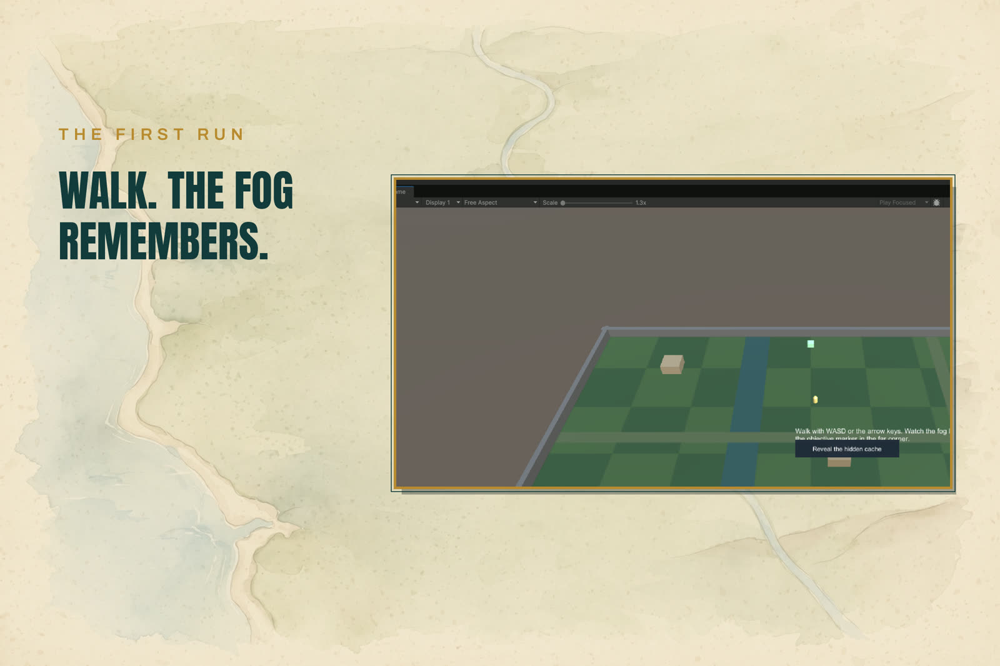
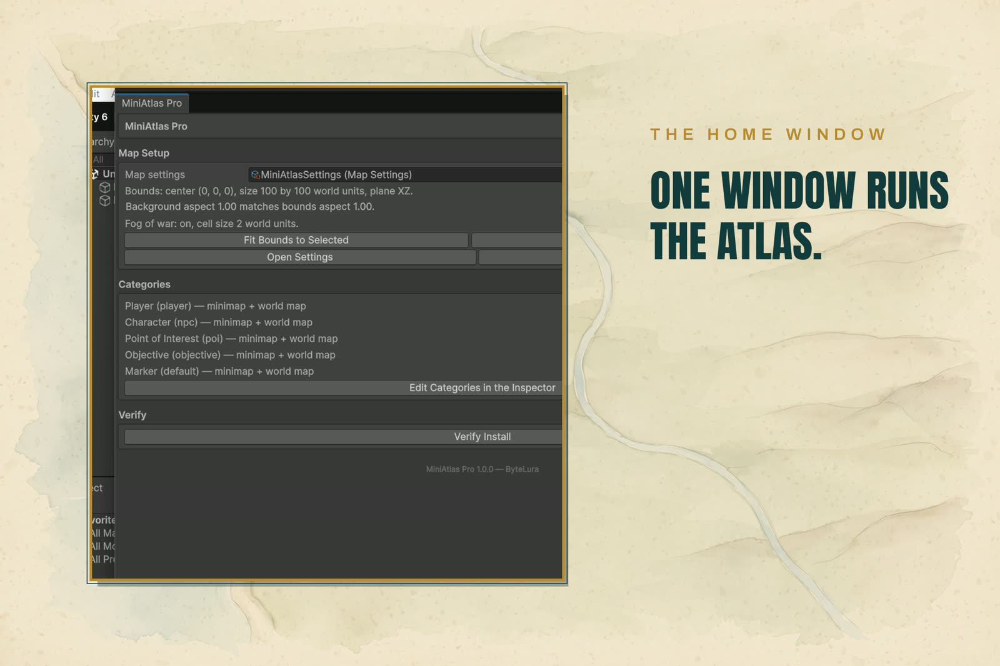
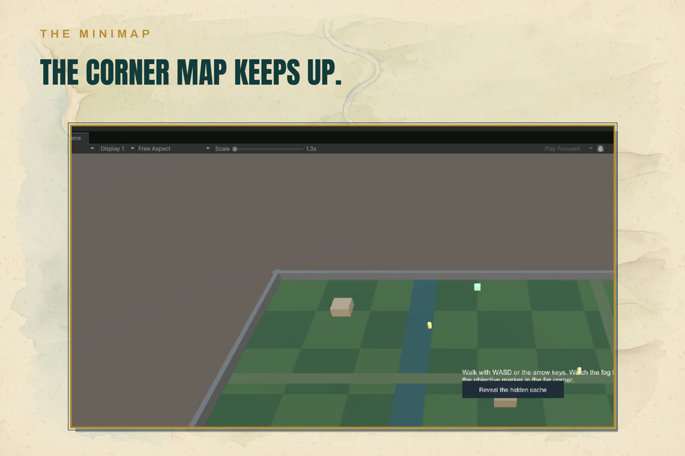
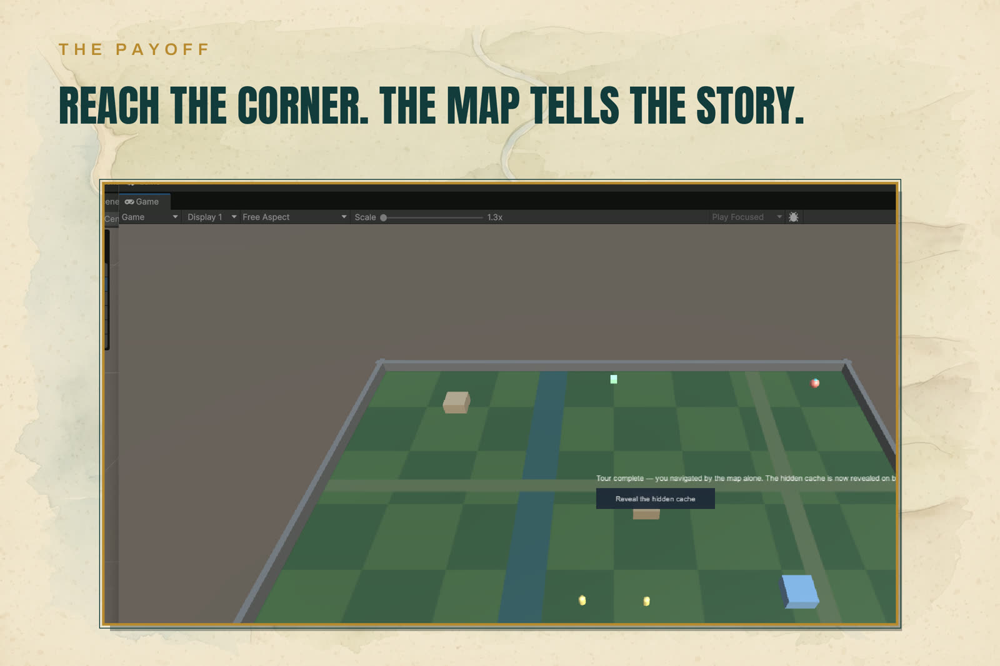

MiniAtlas Pro — Overview
MiniAtlas Pro is a minimap, a full-screen world map, and fog of war for 2D and 3D Unity games — drawn from your world, not rendered by a camera. The map picture is a background image you calibrate to your world bounds; everything live on it is an icon layer driven by world positions. No render textures, no second camera, nothing for the render pipeline to fight.

- The projection — one
MapProjectionper map converts world positions to map positions and back, on the XZ plane (3D games) or the XY plane (2D games). Calibration is one click: select your ground, press Fit Bounds to Selected. - Fog of war — a data grid over the bounds. Revealers (usually the player) stamp it as they move: cells are Unexplored, Explored, or Visible. The explored state saves and loads as bytes or a Base64 string through the shipped API — your save system stores it.
- Markers — a
MapMarkercomponent on any world object: category, label, and a fog-aware visibility rule (Always, When Explored, When Visible, Manual). A marker failing its rule is hidden on both views, with no exceptions. - Categories — icon, tint, per-view visibility (minimap / world map) and icon scale per category, all in one settings asset. Five starter categories ship: Player, Character, Point of Interest, Objective, Marker.
- The minimap — a corner panel that follows a target (or fits the whole world), North Up or Player Up, rectangle or circle, with zoom. An off-view objective shows as an edge arrow at the border.
- The world map — a full-screen panel (M by default): drag to pan, scroll to zoom toward the cursor, click a marker to select it. It shows only what the fog allows — the explored shape of where the player has actually been.
- Quest hooks —
MiniAtlasApi: set an objective, reveal a secret marker, listen for discoveries and selections. Any quest system can drive them; no other product is required. - The Atlas Tour sample — a capsule explores a walled ground while fog lifts around it. The scene is generated by a shipped builder, so every reference in it is real, and it uses only the public API.
Publisher: ByteLura. Tested on Unity 6000.5.4f1 and Unity 2022.3.22f1. One dependency: uGUI, which ships with Unity. Support: bytelura@gmail.com.
Who it is for
MiniAtlas Pro is for 2D and 3D Unity games that need a minimap, a full-screen world map, and fog of war drawn from the world itself. It is tested on Unity 6000.5.4f1 and Unity 2022.3.22f1, and its one dependency is uGUI, which ships with Unity.
Honest scope
The short version — the full list is on the Honest Limits page:
- No camera-capture or render-texture map mode. The map picture is a background image you place and calibrate; everything live on it is an icon.
- URP and Built-in only. HDRP is not supported in v1.
- One active map. v1 supports a single map per scene setup.
- No built-in save system. Fog state is exposed as data (bytes or a Base64 string) for your own save system to store.
Gallery



In this documentation
- Quick Start
- Projection and Calibration
- Fog of War
- Markers and Categories
- Minimap View
- World Map View
- Quest Hooks
- Saving Fog State
- Sample Guide — Atlas Tour
- API Summary
- Honest Limits
- Support
Support
Support: bytelura@gmail.com.